A home screen for Android 12 and later
Live tiles for your phone. Your photos behind them. Almost no battery.
No accounts, no ads, no analytics. Privacy policy
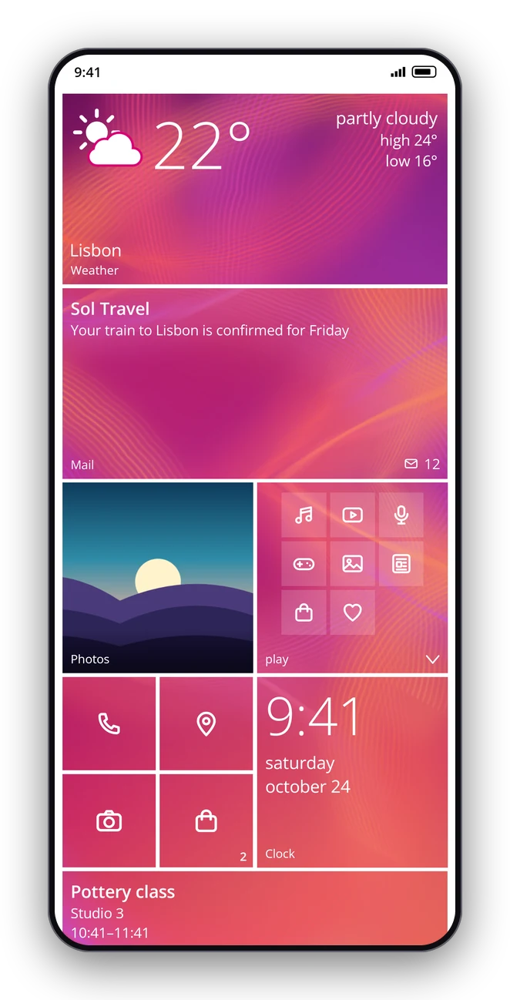
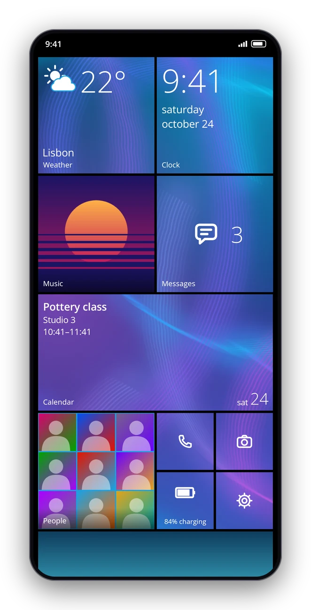
App tiles show an unread count and flip to the latest message. Clock and calendar tiles show the time, your next alarm and your next appointment. Music tiles show the current track with its album art.
There is a weather tile with a forecast, a photos tile that slides through pictures you pick, and a people tile that flips through a mosaic of contact photos. Tiles come small, medium, wide and large, and flip one at a time, only while you can see them.
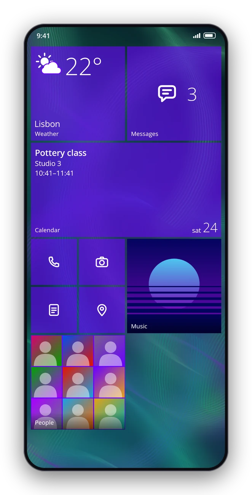
Choose dark, light or follow the system, and pick from the 20 classic accent colours.
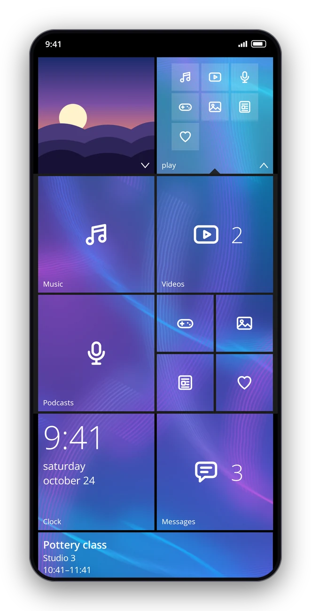
Tap a folder and its tiles open right under its row. Drag them to reorder, or out of the band to take them out of the folder. Folder tiles can be resized like any other tile.
Show a folder as its apps with a name, apps only, apps over a photo, or just the photo.
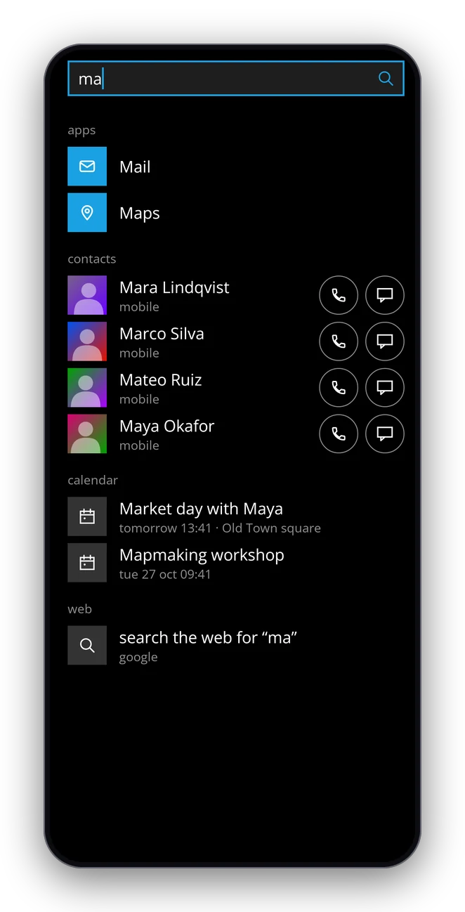
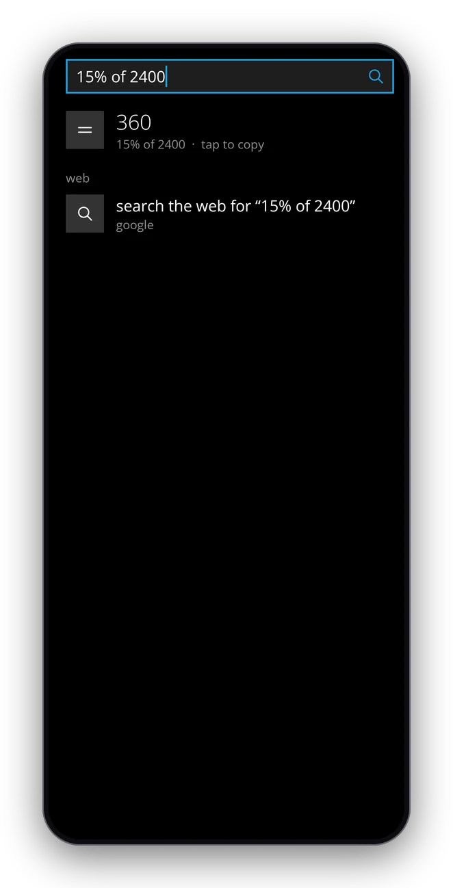
Pull down on the start screen, or tap the magnifier. Results appear as you type: apps (initials and small typos work), app shortcuts and a web row. Nothing leaves the phone until you open a web result.
With Metro Plus, search also answers sums and unit conversions offline, jumps to phone settings, sets timers and alarms, and can look through your contacts and calendar events metro plus
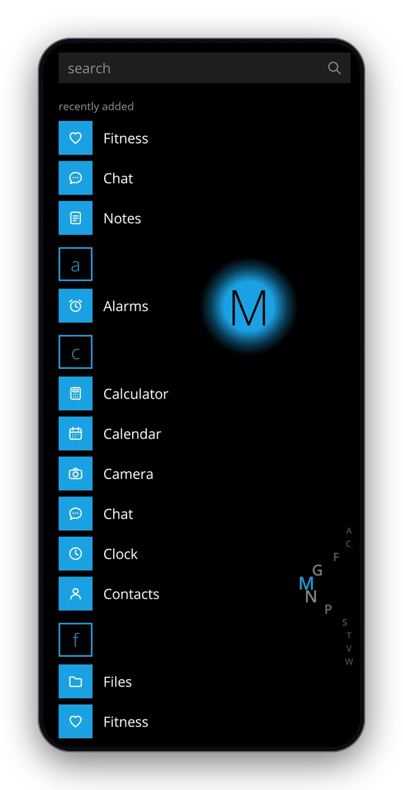
Swipe left for an alphabetical list with letter tiles, a jump grid, search and a group of recently added apps. Prefer bare icons? Switch to plain icons.
The alphabet scrubber on the right edge bulges in a wave around your finger, with a big letter you can place where it suits you. Press and hold an app to pin it, see its shortcuts, uninstall or open app info.
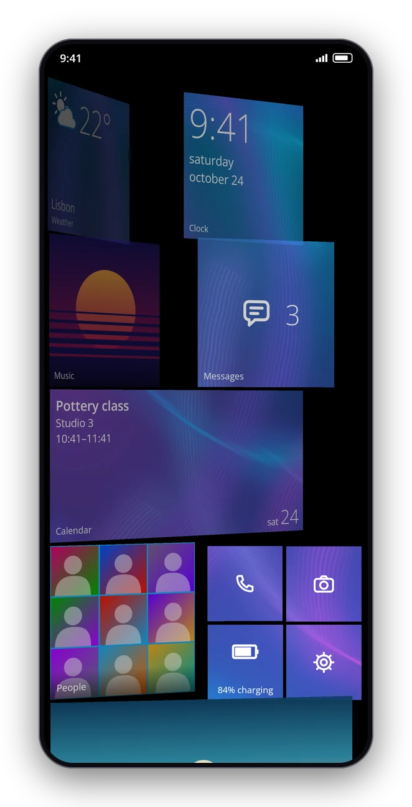
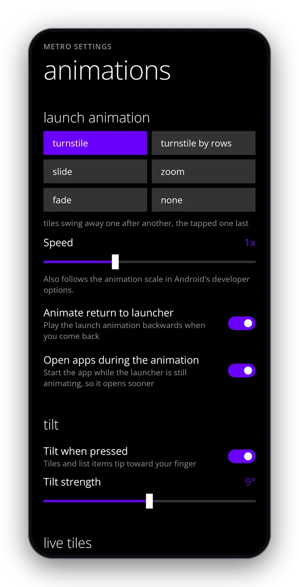
The tiles swing away about their left edge, the one you tapped last, and swing back when you return. Pick turnstile, turnstile by rows, slide, zoom, fade or none.
Set the speed from 0.5x to 2x, play the animation backwards on return, open apps while it is still animating, and tune the tilt on press, live tile flips and page swing.
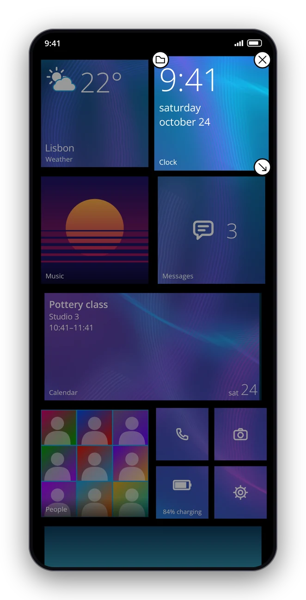
Press and hold a tile to edit. Drag to move, and use the corner badges to unpin, resize or group into a folder. Tiles keep the place you give them and only slide straight up into free space.
Padding is adjustable on all four edges, there are four columns or six, and tablets and foldables get a grid that fills the screen. TalkBack gets custom actions as an alternative to dragging.
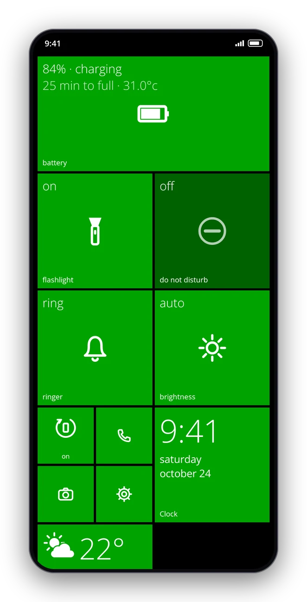
No service of its own, no wake locks, no alarms and no polling. Live tiles, flips, slideshows and widget updates run only while the home screen is on screen. The default background is black, and the turnstile is drawn in a single frame callback per launch.
The one scheduled job is the weather tile's hourly refresh, only while a weather tile is pinned.
Metro Plus adds quick settings tiles: flashlight, do not disturb, ringer, auto-rotate, brightness and battery metro plus
Everything above works without paying, except what is marked metro plus, which is a single one-time purchase on Google Play.
Live tiles, folders, widgets, photo backgrounds, animations, the app list and scrubber, plain app search with smart matching, the web row and typed addresses.
Quick settings tiles, an assistant tile with an "ask" row in search, and smart search: calculator and units, settings shortcuts, quick actions, contacts, calendar events and more.
No accounts, ads or analytics, and no server of ours. Weather is the only thing that goes online, to Open-Meteo, and only if you add a weather tile.
Metro Launcher needs Android 12 or later. It is open source, so you can read exactly what it does.